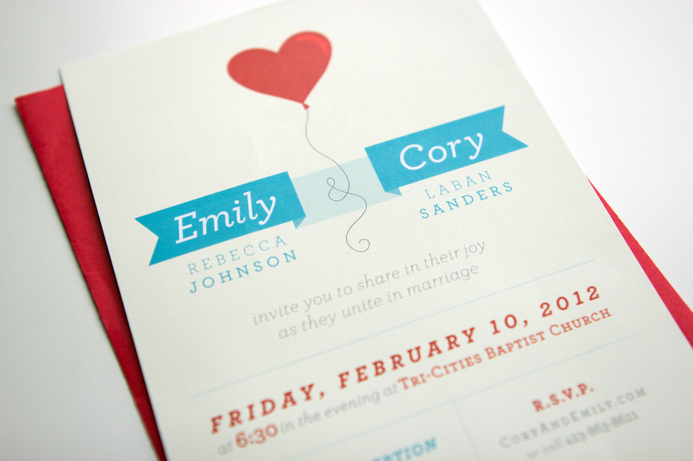

<div class="content-wrapper clearfix">

    <article class="content">

        <div class="row">
            <div class="col span_6">
                
                <!--  -->
            </div>
        </div>

        <div class="row">
            <div class="col span_6 center">
                <h1>Heart Balloon Wedding Invitation</h1>
                <div class="tagline">Who doesn't love a heart balloon?</div>
            </div>
        </div>

        <div class="row">
            <div class="col span_4">
                <h2>Project Details</h2>
                <p>While my clients wanted to play off their Valentine's weekend wedding, they didn't want to be too clich&eacute;. The bride asked if I could create an invitation using a heart balloon "without making it cheesy." Integrating the balloon string into the type gave real purpose to the illustration, and led to a bright, fun invite that was perfect for their big day.</p>
            </div>
            <div class="col span_2 right">
                <h2>My Role</h2>
                <ul>
                    <li>Art Direction</li>
                    <li>Illustration</li>
                </ul>
            </div>
        </div>    

    </article>
</div>
